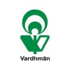

Electronic Engineer Vardhman Textiles Limited Duration: Jun 2022 - Jul 2022 Baddi, Himachal Pradesh, India · On-site
• The project aimed to rehabilitate the existing plant-wide DCS (boiler plant),
upgrade the ESD system, and improve the working efficiency of the DCS system.
• Studied and learned the workings of Honeywell DCS using software tools:
Experion LX and Matlab.
• Performed the calibration of electronic instruments used in the plant, and
upgraded the efficiency of the DCS up to 92% from 85%.

Skills Used
· MATLAB · Honeywell DCS · Electronic Engineering
· Calibration · Microsoft Office